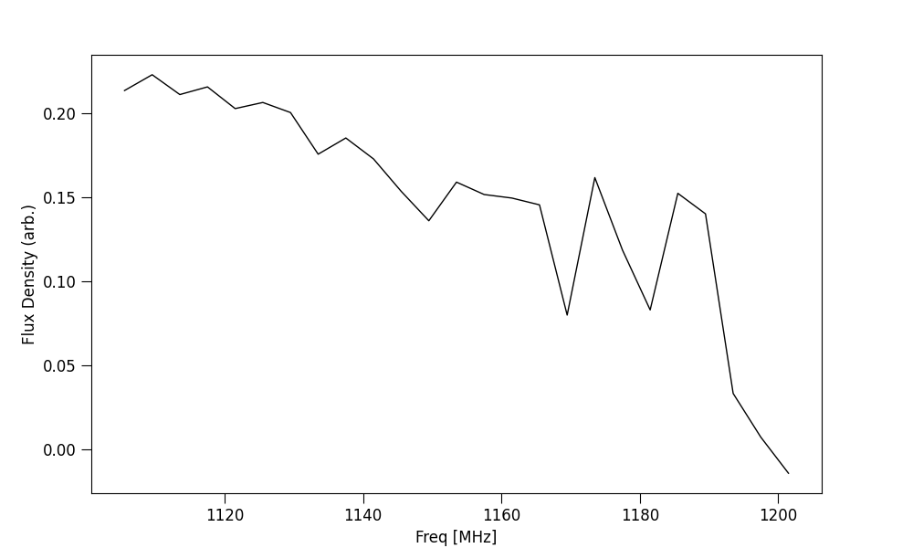
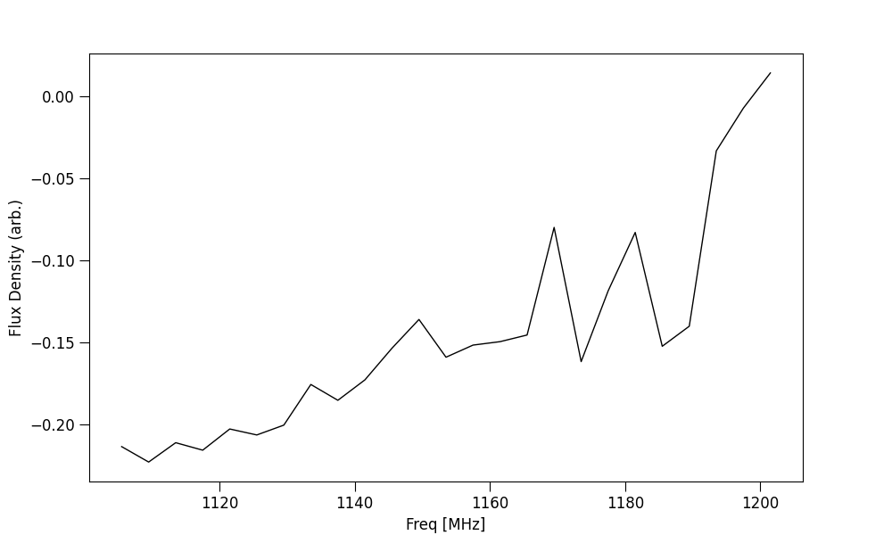

Tutorial 4: Weighting data in time/freq
This tutorial will walk through weighting data using ILEX.
Weighting data
One Useful feature of ILEX is weighting. The frb.par.tW and frb.par.fW attributes are weights class instances that
can be used to respectivley weight data in time when making spectra, or weight data in frequency when making time profiles. The
weights class found in ilex.par has many methods for making weights, we will use method = func which will allow us
to define a weighting function. The plots below show the before and after of applying a set of time weights before scrunching in
time to form a spectra of stokes I.
# lets make a simple scalar weight that multiplies the samples in time
# by -1 so we can see it works
# lets plot the before and after
frb.plot_data("fI") # before
frb.par.tW.set(W = -1, method = "None")
frb.plot_data("fI") # after
# NOTE: the None method is used to specify we want to take the values weights.W as
# the weights
{kind=link}

{kind=link}

We can be a little more creative with how we define our weights. Lets define a function based on the posterior of our time series profile we fitted before.
# import function to make scattering pulse function
from ilex.fitting import make_scatt_pulse_profile_func
# make scatt function based on number of pulses, in this case 1
profile = make_scatt_pulse_profile_func(1)
# define a dictionary of the posteriors of the fiting
args = {'a1': 0.706, 'mu1': 21.546, 'sig1': 0.173, 'tau': 0.540}
# another method of setting the weights in either time or frequency (xtype)
frb.par.set_weights(xtype = "t", method = "func", args = args, func = profile)
# now weight, The rest is left to you, why not plot it?